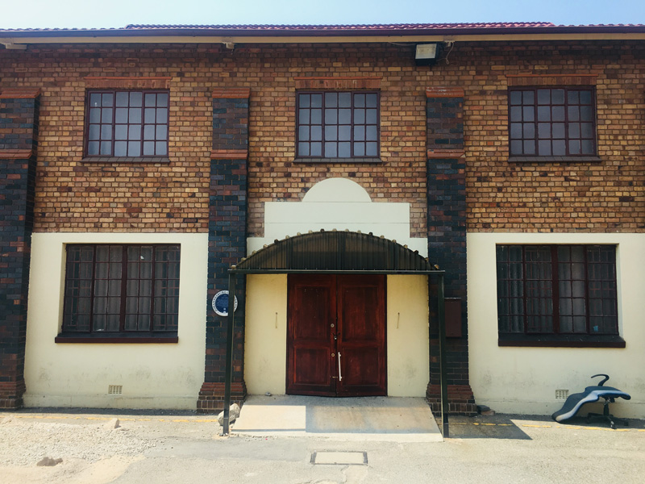
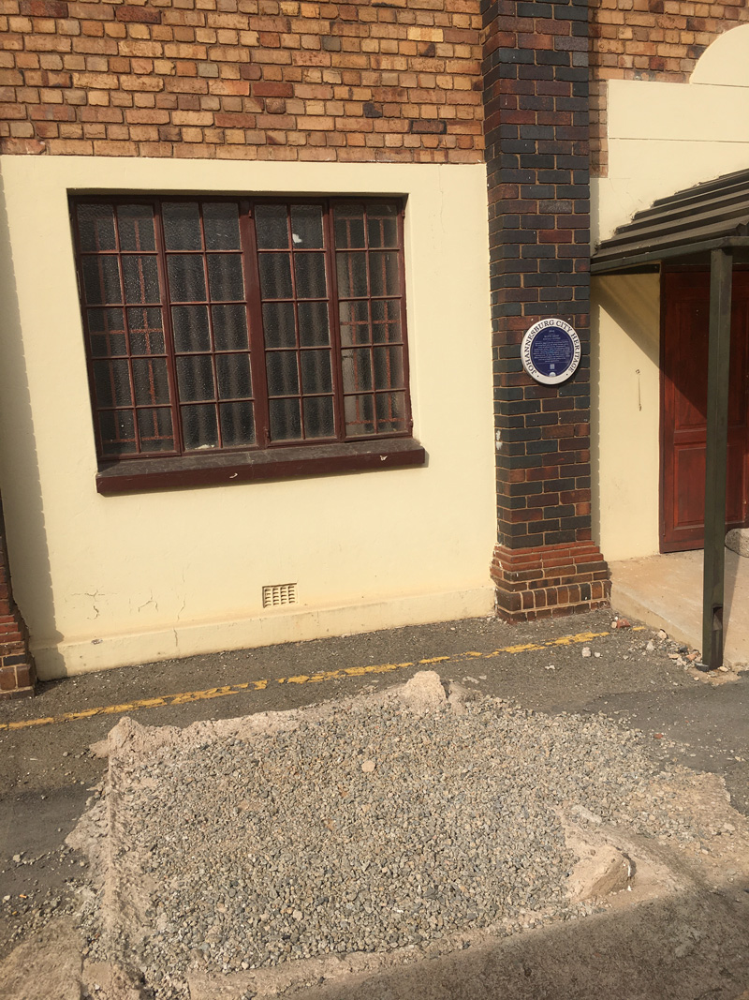
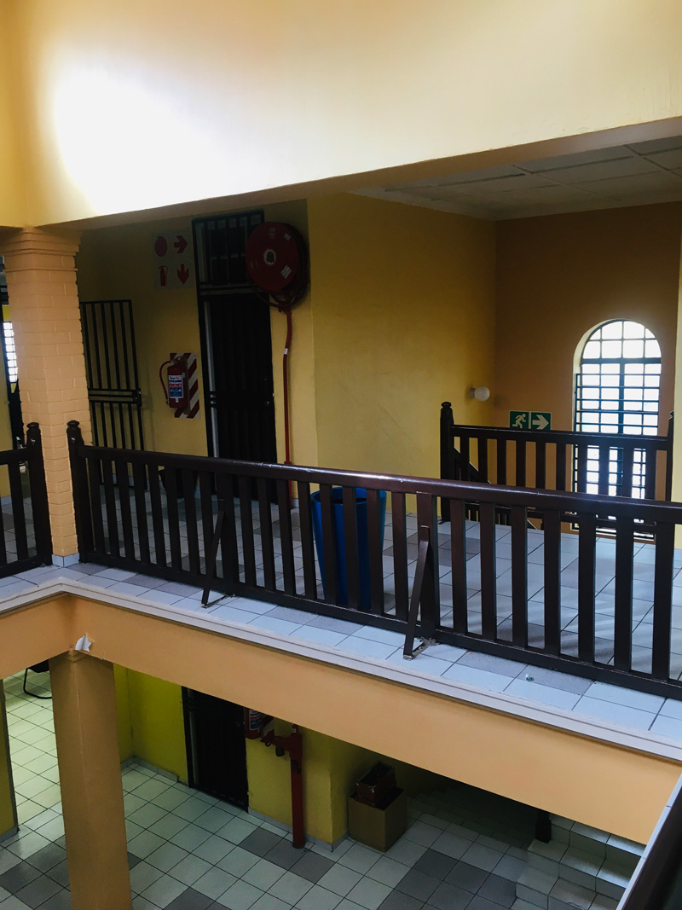

BANTU MENS’ SOCIAL CENTRE Opened in 1924 to provide recreational facilities for young black men, the BMSC became a great centre of cultural activity, frequented by intellectuals, artists, writers and emerging political leaders. Sporting events were held here, plays and concerts, and the annual Eisteddfod, which became a national event. In 1944, the Youth League of the African National Congress was founded here, which went on to transform the politics of the parent organization.
The deep blue enamel Johannesburg City Heritage plaque is installed next to a double-door on what seems to be the side of the hall. It was as quiet as it can get nowadays on the Saturday morning I found it, now within earshot of the Southern freeway overpass, within five years of the centenary of the BMSC’s opening.

The façade is in pretty good nick for a ninety-six-year-old, a black-and-tan fantasy in its own right, the two-tone brickwork punctuated by terracotta tiles that harmonise with the roofing. It was the more recent additions that appeared forlorn: the door handle dangled at angle dissonant to the symmetrical lines and arcs of the building; a broken office chair lay prone in dejected genuflection; the crumbling of the corner of a latter-day ramp for wheelchair access drew my eye to a concrete block that I later learnt is sometimes used to prop the door open or closed (probably because of that loose handle). The concrete turns out to be the remnant of a failed monument I also heard about later which was started in recent decades and then demolished. Now only the square footprint remains, covered by the kind of gravel that crunches underfoot on garden paths, carports, and graves.

The Immovable Heritage Inventory Form provided by the city’s Directorate of Arts, Culture and Heritage that led to the installation of the blue plaque in 2015 reflects the patient, studious work of documenting what remains of such 20th century, inner-city sites of black culture and sociability that were forcibly removed during the late colonial and apartheid periods, and offers a more official assessment than my subjective musings:
This is a handsome double-story brick building dating from the 1920s, distinguished by fine decorative brick-work. Much of the space is taken up by a large hall on the south side, with double volume spaces, and offices attached on the north side.
The brick facades and overall structure are well preserved. The interior has however been altered over the years, taking away much of the original character. The hall has lost its original timber floors (replaced by tiles), stage and other fittings. Some of the original context has been lost, especially as the previous access to and from Eloff Street has in more recent years been closed off with a high wall.
A Concise Historical Dictionary of Greater Johannesburg informs me that the name “Eloff” is a trace of the city’s Boer republican history:
Jan Eloff (1859-1939) participated in the First Anglo-Boer War (1880-1881) against Britain and subsequently became a clerk in the office of the State Attorney. In 1884 Eloff was appointed first civil commissioner of the South African Republic and obtained firsthand knowledge of the discovery of gold on the Witwatersrand. He accompanied Captain von Brandis to Johannesburg as public prosecutor and clerk. Eloff succeeded von Brandis as Mining Commissioner in November 1886 and held this post until the end of December 1892. Eloff Street, one of the earliest streets in the Central Business District, was named after him.
The Heritage Inventory Form fleshes out some of the information condensed on the enamel plaque – since you can view the document yourself, I’ll omit those parts that are repeated:
From the late 1920s, the Bantu Mens’ Social Centre (BMSC) served as a lively centre of cultural activity for black men in the city, many of them forming the cultural elite, attracting and nurturing many outstanding intellectuals and artists. For decades, the segregation policies of successive white governments saw to it that the Bantu Mens’ Social Centre was virtually the only downtown facility for black people. The BMSC looms large also in the annals of political history, as the birthplace of the ANC Youth League, which went on by the 1950s to inject a new militant energy into the ANC.”
The Bantu Men’s Social Centre was…founded by the Reverend Ray Phillips, an American missionary, together with other liberal minded blacks and whites. The aim of the centre was to provide recreational facilities for young black men in the city. The place was frequented by budding political leaders, writers, intellectuals, teachers and journalists.
The BMSC developed into a lively venue, where meetings, lectures and debates were held, cultural events such as plays and concerts, as well as dances, weddings and sporting events. The hall served in the past as a famous concert venue, and hosted the annual Eisteddfod, or choral festival. In 1934 the Transvaal Eisteddfod became a national event, and renowned singers came to Johannesburg for several days of competitions at the BMSC.
The facility was well funded, and had a branch library of the Carnegie Corporation, including an impressive collection of works by African American authors. There was also a tennis court alongside the building.
n 1932, playwright H.I.E. Dlomo and others formed the Bantu Dramatic Society at the BMSC, where they produced a series of productions for mixed African and white audiences, although with a limited following. The Bantu Dramatic Society continued its efforts to promote literary drama at the BMSC in the 1940s.
On 24 February 1944, a group of young men (and one woman, Albertina Sisulu) met at Johannesburg’s Bantu Mens’ Social Centre at the south end of Eloff Street, where they were regular visitors. Amongst them were the lawyer Anton Lembede, an aspirant lawyer, Nelson Mandela, teachers Oliver Tambo and A.P. Mda, and two estate agents, Walter Sisulu and David Bopape. This young elite proceeded to form the African National Congress Youth League, which went on to inject militancy and radicalism into the ANC.
Membership of the BMSC declined in later years, probably as the Group Areas Act started to bite, and in 1971 the centre closed its doors. The West Rand Administration Board moved into the building in 1973. Currently, the Johannesburg Metro Police occupy the building, part of a large complex that houses their headquarters.
There is a particular pathos in finding the shell of the BMSC so well-preserved amidst the anomie of a precinct which many Johannesburg residents now know primarily as a place where one pays for traffic fines and licenses – a far cry from the kinds of transport that the site originally stood for. Hedged in by a grid of 1970s-style offices and barrack-like structures, the BMSC building today houses the anti-corruption unit that investigates internal illicit traffic within the JMPD. Superintendent Eugene Bezuidenhout dutifully consults with his seniors to arrange access for me to view the interior and kindly makes time in his schedule for my educational work, for which he expresses appreciation as he shows me around. The reading and meeting rooms described in the heritage plaque are today inscribed in the official civic register of “Batho Pele” (literally, “people first”, a public service campaign dating from the Mbeki Presidency). From the double-volume space in the interior, its period wooden railings still intact, one sees that all but one of the multiple entrances that led into the hall from the foyer have been boarded up. From within the hall, one is watched through glass from the first-floor offices in adjacent parts of the building. As we make our rounds, Sup. Bezuidenhout tells me: “When one works here at night, you can hear the hall”. His hands gesture next to his ears to an elusive presence.

What do traffic investigators and officials hear when their acoustic awareness is heightened as the white noise of ambient traffic subsides and the hall becomes a nocturnal resonating chamber adjoining their offices through boarded-up entrances and partially painted-over glass partitions? Is it just the sounds of their own voices and utilitarian office clatter? Or does the hall perhaps echo more than the physical present, disfigured though the original acoustics may have become due to the alterations mentioned in the city’s conservation report? Might any spectral music remain in these resonances?
I am reading this essay to you in the hall on an August afternoon in 2020, the sounds of my voice resonating in this space so as to inscribe its sonic materiality in my reflection on what lasts of the BMSC, and also what is lost. You can turn the concentric dials around the blue plaque on your screen to adjust the relationships between three audio sources, each with their own spatiality and temporality: you can adjust the volume of the sound of my voice, or mute it entirely and follow the text; likewise, you can foreground or background the simultaneous ambient resonance of the hall – the properties of which contemporary workers in the rest of the building are periodically aware; and thirdly, you can adjust the volume of the recording by local jazz icon Zakes Nkosi named after the “BMSC”, recorded in 1959, probably in a studio nearby rather than in the hall itself. If you like, you can scroll down within the inner blue plaque for the written text of this essay, where you can rewind or fast-forward, and where you can also find the references and acknowledgements as well as some of the primary sources archived. It’s your choice, then, whether you’d like to treat the blue plaque on your screen, now repurposed as a digital icon, as a monument, or a dial, or a portal, as the handle of a scroll, or perhaps (as has happened since the phonograph captured that most ephemeral of traces, sound, on wax) in ways that I and the web developers who have ably assisted me haven’t anticipated.
This essay extends my long-term interest in how practices of listening, aurality and their attendant ways of knowing have shaped public and private experiences of Johannesburg and elsewhere. In my research regarding the practices of often-overlooked jazz appreciation societies in and around Gauteng, I have argued that it is possible to discern “ghostly social auras” in at least some of the ways in which these listening collectives have sustained vernacular jazz sociability, largely below the threshold of official public culture, across the late apartheid era and into the current dispensation. I’ve been drawn to understand how, despite their ephemerality amidst the systemic segregatory violence of forced removals and the evacuation and destruction of sites that symbolised the claims of black citizens to the city, elements of Johannesburg’s iconic jazz cultures of the mid-20th century have lasted in the socio-musical practices of latter-day listening societies. Though the BMSC has not, to my knowledge, been a site of jazz appreciation activity since its closure as a music venue, there is reason to conjecture that Johannesburg’s jazz cultures have sonic afterlives that extend across ruptures in the city's history and have travelled elsewhere, where they were sustained through the long night of high apartheid. Though the BMSC was silenced as a site of musical and other forms of heightened sociability, the practices which it housed were not. Though scholarship on this topic is limited, other writers agree that there are grounds to find continuities across space and time – in short, resonances – with some sustained manifestations of local jazz culture that can still be found, even in quite far-flung places.
A further point of reference is John Mowitt’s generative explorations of modes of inquiry that are grounded in aural experience. Mowitt invites us to revisit some of the central concepts of critical theory and consider the limitations of their visual biases. For example, what would it entail, Mowitt challenges us to consider, to account for the “systemic imperfections” that characterise the relation between a text and a practice if it does not merely reflect the circumstances of its emergence but echoes them? The time lag between those events and the present renders it more appropriate to conceive of the relationship between a historical event and the work of historiography as an echo, as an attempt to hear a time departed over again, than a relationship framed as a form of synchronic visual mirroring. At a workshop which Mowitt attended in, I happened to use the verb “resonate” and he prompted me to reflect on its affordances, something I started to do in a recent piece of writing that I’m elaborating here, given the possibility that an online piece can work with resonance as one of its material and sensory properties.
It turns out that the notion of resonance has a long history in Western thought, across the arts and the sciences. Veit Erlmann, a scholar who has written extensively about the global reverberations of South African choral musics, has traced the ways in which the notion of resonance “has become part of a rich metaphorology that seeks to replace the binaries of structuralist thought with a notion of discourse that is diametrically opposed to a distancing and objectifying form of knowledge.” In his understanding, conflicting interpretations of resonance “shed new light on contemporary debates about the precarious interrelations between sound, aurality, cognition, subjectivity, and embodiment, and their broader significance for a cultural critique of modernity”. In speaking of resonances, we may sense, then, correspondences that reach across space and possible time that are not explicable in terms of direct, mechanical causality but which stand in a kind of sympathetic – or unsympathetic – vibration with one another.
In attending to remnants of the city’s cultural infrastructure and their repurposed afterlives, I am interested in holding in mind the ephemerality of practices of listening and those few physical sites that remain of infrastructures for listening that survived apartheid. This raises questions about whether and how these spaces that the contemporary city often forgets relate to contemporary efforts to memorialise the past in official, authorised heritage discourse and practice. I’m exploring how listening to these spaces and for their histories might effectively be engaged using sounds, words and images, while prioritising auditory modes of attention that are seldom conveyable in the conventional journal article. In the process, I’m of course experimenting with ways to enable readers to be active and critical listeners.
Though scholarship is relatively scant on the conditions that created the BMSC nearly a century ago and shaped its apogee and decline over the subsequent half-century, it is clear that its story as a site of black cultural achievement and, later, socio-political activism is simultaneously a story of attempts to control and contain black aspirations and claims to the city. The gradual smothering under apartheid of everything the centre represented came after decades of liberal paternalism, but a competing form of white supremacy. But it remains important to consider how the so-called black liberals who collaborated with certain whites in the establishment and subsequent development of the centre understood their own roles and chose among the options deemed to be available at the time. Rights to full citizenship were often the subtext to the pursuit of artistic excellence among what the more recent heritage documents quoted earlier repeatedly refer to as a repressed black “elite”. Precarious as this African middle class might have been, it existed in contradistinction to the working populations associated with the mining hostels and the underclasses that endured life in the so-called slumyards of Johannesburg, themselves both distinct crucibles of urban cultural encounter that were relatively removed from the social circle that frequented the BMSC. Moreover, the centre wore its gendered, indeed patriarchal and heteronormative, designation on its sleeve, eliding the extent to which the generation of musicians, choristers and audiences who were associated with it included countless women – several, like music teacher and ensemble leader Emily Motsieloa, in leading roles.
Membership of the BMSC declined in later years, probably as the Group Areas Act started to bite, and in 1971 the centre closed its doors. The West Rand Administration Board moved into the building in 1973. Currently, the Johannesburg Metro Police occupy the building, part of a large complex that houses their headquarters.
In his late book Spectres of Marx (1993) deconstructivist French philosopher Jacques Derrida coined the term “hauntology” (an articulation of haunting with ontology) to refer to the ghostly return or persistence of elements from the past. The notion has since been taken up in several artistic fields, notably giving rise to a category of music, if not a genre, that evokes cultural memory and the aesthetics of the past. Musicians associated with the trend explore ideas related to temporal disjunction, retrofuturism and the persistence of the past, often foregrounding the sonic qualities of outmoded recording technologies. Though hauntology in music has been associated with a largely British following since the turn of the millennium, in moving to close with a piece of recorded music, I’m giving a nod to the hauntologists as I reflect on what it means to revisit a 1959 recording by Isaac Zakes Nkosi from Alexandra township, whose album titled Our Kind of Jazz made him one of the key figures in the establishment of the style ambiguously described as mbaqanga. In a multiply mediated chain of sonic reproductions via the present online medium, thanks to help from the country’s leading discographer of South African popular music, Rob Allingham, I’m able to share my iPhone’s recording of him playing his period recording of Bra Zakes playing his own composition, “BMSC”. After the crackle as the stylus kisses the vinyl, the jaunty wail of Bra Zakes’ alto sax is in the front of the mix, with a strummed banjo accompaniment and the drum kit remaining in the background throughout. After warming up over a twelve-bar intro that presents the unassuming proto-theme, the melody ascends and unfurls like a ribbon in an August wind across the mine dumps. Over the course of three choruses, it fluidly avoids literal restatement, swinging its way across bar lines and phrases and flexing the alto’s range. Terse at times, Bra Zakes deliberately paces his declamations, underscoring his melodic chops by contrast. And then, most dramatically, he works up to a climactic architectonic apex, holding a single joyful cry over from the second into the third chorus over no less than ten bars. Is it the sound of a jazz musician holding his breath and eulogising the BMSC? However we answer that question, the last word for now goes to Bra Zakes.
The author conveys sincere thanks to Eric Itzkin, Superintendent Eugene Bezuidenhout, Rob Allingham, Andrei van Wyk, Andrea Hayes, Tegan Bristow, Ruth Sacks, Naadira Patel and the other members of the collective that has animated the Johannesburg Lasts project.